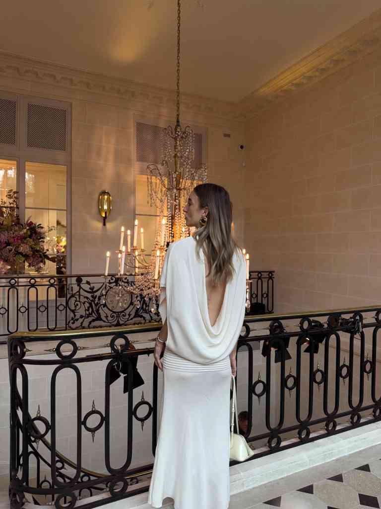

Australian Content Creator
Ottilie Studios is the overarching company of Australian–German creator @dom.overseas.
30th October 2023
Refined, elevated visual storytelling between Australia & Europe.
Dominique's signature elevated photo and video content has not only gone viral across multiple platforms but has also been adored and published by Australian and global brands since 2009. Chanel Beauty, Tory Burch, New Balance and Hermès Beauty are part of her extensive client portfolio.
Her focus lies in creating captivating content — both within Australia and overseas during her frequent travels to Europe — for predominantly Australian and US brands. Her work is adored for its effortless blend of Parisian sophistication, Mallorcan allure, and the stunning landscapes and signature interior designs of Australia.
She is renowned for her effortless and elevated style, one of the many skills she perfected while working as a fashion assistant at VOGUE in Munich and Paris.
Beyond her editorial endeavours, Dominique co-owns @hawkerstudiosgc — two natural light photo studios on the Gold Coast, QLD.
- 01 Full-time content creator since 2016
- 02 Former Fashion Assistant at VOGUE, Condé Nast
- 03 Co-owner, Hawker Studios (Gold Coast)